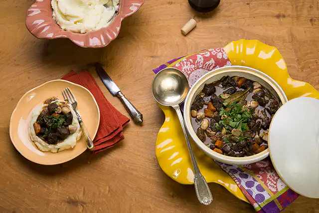

Boeuf Bourguignon in an Electric Pressure Cooker

Description
The pot of gold at the end of the rainbow for those seeking a flavorful recipe prepared in an electric pressure cooker.
Use one cup of the wine for marinating and drink the rest. Cheers!
This recipe comes from Rita Lobo's Panelinha
website.
For the Marinade
Ingredients
- 1 kg of beef shank
- 1 cup of red wine
- 2 bay leaves
- 6 sprigs of thyme
Steps
- Cut the beef into medium-sized cubes and transfer to a bowl.
- Add the thyme and bay leaves and cover with the wine.
- Refrigerate to marinate for at least 2 hours (if you prefer, marinate the meat overnight before cooking).
For Cooking
Ingredients
- 2 carrots
- 2 celery stalks (without leaves)
- 200g fresh button mushrooms
- ½ onion
- 2 cloves of garlic
- ⅓ cup (70g) diced bacon
- 1 tablespoon tomato paste
- 2 tablespoons all-purpose flour
- olive oil to taste
- salt and freshly ground black pepper to taste
- chopped parsley to taste
Steps
-
Peel and cut the carrot into thick half-moons; peel and finely chop the onion and garlic cloves; wash, dry,
and cut the celery into thick slices, diagonally.
-
In another bowl, pass the meat cubes through a sieve, scraping the marinade liquid well with a spatula – in total,
you will need 1 cup of the liquid to cook the stew; if necessary, add water.
-
Return the meat to the marinade bowl (no need to wash), season with salt and pepper to taste, sprinkle with flour,
and mix with your hands to coat all the cubes – this technique is called "singer" and helps to thicken the sauce.
-
Turn on the electric pressure cooker (uncovered) and program it for 30 minutes of cooking – this way it stays well
heated to brown the meat and prepare the sauté. When hot, drizzle with ½ tablespoon of olive oil and brown the meat
cubes in batches, without overcrowding – if you put everything in at once, the meat will steam instead of browning.
Transfer to a serving dish and repeat with the rest, drizzling with olive oil for each batch.
-
Add the bacon and stir until it begins to brown. Add the onion, season with a pinch of salt, and sauté for 5 minutes.
Add the garlic, tomato paste, and stir for 1 minute to release the aroma.
-
Add the carrot and celery, drizzle with the reserved marinade liquid (with the herbs), and mix well to incorporate
the flavor of the sautéed ingredients. Return the meat to the pan and season with salt and pepper to taste.
-
Close the electric pressure cooker, set the valve to pressure cook, and the timer for 30 minutes. Meanwhile, with a
damp dish towel (or paper towel), clean the mushrooms – avoid washing them under running water, as they absorb water and
lose flavor. Cut each mushroom in half (if they are very large, cut them into quarters).
-
After 30 minutes, the electric pressure cooker will turn off automatically and keep the stew warm. Adjust the valve to release
the pressure and let the steam escape completely before opening the lid. Stir in the mushrooms and let them cook in the residual
heat of the stew for 5 minutes. Turn off the cooker, stir in the chopped parsley, and serve immediately.
And what about in a conventional pressure cooker?
If you're preparing it in a conventional pressure cooker, you'll need more olive oil, more liquid, and more time. Instead of 1/2 tablespoon
of olive oil to brown the meat, use 1 tablespoon and drizzle it with each new batch. Instead of 1 cup of marinade liquid, you'll need two (top
up with water). And the cooking time will increase to 35 minutes.
Back to Index